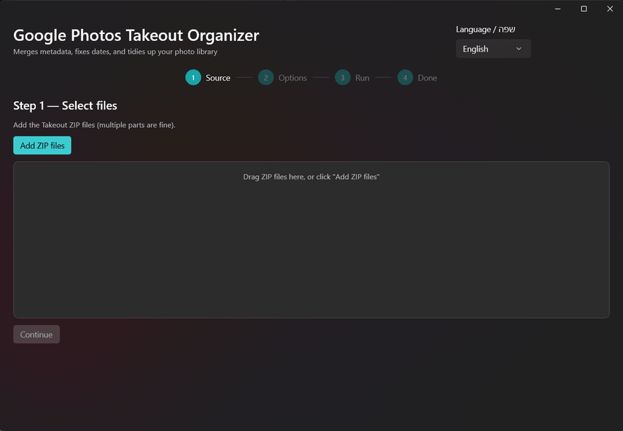

Put the dates back on your photos.
Google Takeout hands you ZIPs where every photo's real date, place and caption live in a .json next to it, not in the photo. Open the folder anywhere else and it's all dated today. This reads the ZIPs, writes the truth back into each file, and sorts the lot.
Free, MIT, no telemetry. Windows 10/11, no admin rights. The installer isn't code-signed yet, so SmartScreen will ask once: More info → Run anyway.

What Google gave you: today. What the JSON knew: 22 Jul 2023, 07:26, Tel Aviv.
What it does to a Takeout export
Every step below runs on your machine. Nothing is uploaded; the only network call is the one-click ExifTool install, and even that is bundled in the installer.
- 01
Reads the ZIPs as they are
Multi-part exports (
takeout-001.zip,-002…) are indexed together. No unzipping 200 GB first and no merging folders by hand. - 02
Matches every photo to its JSON
Including Google's truncated
…supplemental-metad.jsonnames,-editedand(1)variants, and Live/Motion Photo pairs: by prefix, not by luck. - 03
Writes the metadata into the file
Capture time with the correct timezone offset (from GPS, with a fallback zone), coordinates and description go into EXIF/XMP via ExifTool. Any photo app reads them afterwards.
- 04
Keeps one copy of each photo
Takeout duplicates a photo into every album folder. Content-hash dedup keeps one; albums become shortcuts, copies, or a JSON manifest; your choice.
- 05
Sorts into a library you can open
ALL_PHOTOS/2023/2023‑07/…by default, or by album, or flat. Archive, Trash and Locked Folder stay separate. Dry-run shows the plan first; interrupted runs resume.
Two ways in
The wizard asks three questions. The CLI takes flags. Same engine, same output.
Just want your photos back
Install, drag the ZIPs in, keep the defaults, pick an output folder, run. The summary tells you what was matched, deduplicated and written, and opens the log if anything went wrong. Hebrew and English, switchable live.
Want to script it
# same engine, no UI
gptakeout -i takeout-001.zip -i takeout-002.zip -o D:\Photos
--structure yearmonth --albums shortcut --duplicates keepbest
--dry-run --report plan.jsonHow it compares
Good tools exist; pick by what you need. If you run Immich, use immich-go. On macOS or Linux, GPTH is the closest equivalent. Facts from each project's README, September 2026.
| This tool | GooglePhotosTakeoutHelper | immich-go | google-photos-exif | |
|---|---|---|---|---|
| Platform | Windows · wizard + CLI | Win / macOS / Linux · CLI | Win / macOS / Linux · CLI | Node CLI |
| Reads the ZIPs directly | Yes, multi-part | No — unzip and merge first | Yes | No |
| Writes into the files | Date + tz offset + GPS + description | Date only | Not the goal (server) | DateTimeOriginal only |
| Timezone-correct local time | From GPS + fallback | No | Server-side | No |
| Truncated sidecar names | Handled | Open issue #353 | Handled | — |
| Albums / dedup | Shortcut · copy · manifest / content hash | Same options / yes | On the server | — |
Full table with sources in the README.
The honest version
Three releases, 190+ automated tests, CodeQL on every change, SBOM and SHA‑256 checksums on every download. The first bug a stranger reported was fixed and shipped within a day. It is also a young project by one person. Here is what that means.
- Windows only. No macOS or Linux build; the CLI would port, the wizard would not.
- Unsigned installer. SmartScreen warns on first run until a code-signing certificate lands. The portable zip has the same caveat.
- Bring your own backup. It never modifies the ZIPs and writes to a new folder, but a dry run first is still the smart move.
- Open source, MIT. Bug reports are answered; issues are the front door.